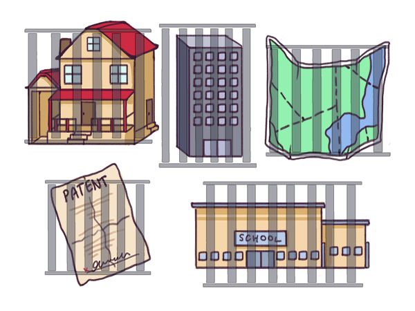

La zemblanité des conteneurs
Comme l’a écrit l’historien du management Alfred Chandler dans son étude des entreprises du début de l’ère industrielle, la structure découle de la stratégie. Quand une stratégie fondée sur les objectifs atteint son but, le cadre temporaire du problème original se fige dans les limites d’une organisation bien huilée. Des revendications temporaires et spécifiques sur les ressources sociétales se transforment en droits de propriété captifs globaux et illimités pour les gagnants de guerres politiques, culturelles ou militaires.

On se retrouve en conséquence avec des conteneurs dont certains sont les élus privilégiés pour toujours et d’autres les exclus permanents : les organisations du monde géographique. Par leur conception même, de telles organisations sont ce que Daron Acemoglu et James Robinson1 appellent des institutions extractives. Elles sont conçues non seulement pour résoudre un problème particulier et en sécuriser les gains, mais également pour continuer à en tirer les bénéfices indéfiniment. Toutes choses égales par ailleurs, idéalement la richesse, l’ordre et l’harmonie s’accumulent à l’intérieur des limites du vainqueur, alors que les déchets, les coûts sociaux et les conflits s’amoncèlent en dehors, laissés à la discrétion des perdants des guerres de ressources.
Cette description ne s’applique pas seulement aux grandes banques et aux grandes entreprises du capitalisme de connivence. Même une institution qui peut sembler au-dessus de tout soupçon, la famille traditionnelle de l’ère industrielle par exemple, génère un certain coût social. Rien qu’aux Etats-Unis, les législations prévues pour favoriser le mariage et l’accès à la propriété désavantagent systématiquement les célibataires et les familles non traditionnelles (qui représentent maintenant plus de la moitié de la population). Même les familles traditionnelles, telles que définies et subventionnées par le législateur, constituent une institution extractive.
Là où apparaissent des institutions extractives, il devient progressivement plus difficile de résoudre des problèmes par la méthode des objectifs. Chaque nouvelle tentative de résolution de problème doit affronter des limites toujours plus infranchissables. Résoudre des conflits de plus en plus coûteux constitue généralement l’étape liminaire à la résolution du nouveau problème lui-même. Dans les pays développés, des secteurs comme l’énergie, la santé et l’éducation sont tellement englués dans un dédale de règlements et autres limites qu’y résoudre des problèmes ne peut se faire qu’à la vitesse de l’escargot. Le résultat est connu : des coûts de plus en plus élevés et des innovations de moins en moins possibles – ce que l’économiste William Baumol a appelé « la fatalité des coûts croissants ».
La fatalité des coûts croissants démontre comment, dans leur phase terminale, les méthodes de résolution de problèmes par objectifs finissent par s’étouffer elles-mêmes. Sans innovation ouverte, la complexité croissante de limites toujours redessinées fait que la plupart des problèmes semblent insolubles. L’ordinateur planétaire que représente le monde géographique en vient à se bloquer.
A l’orée du premier boom Internet, les organisations qui définissaient le monde géographique étaient déjà en difficulté. Comme Gilles Deleuze l’a noté aux environs de 19922 :Nous sommes dans une crise généralisée de tous les milieux d’enfermement, prison, hôpital, usine, école, famille. La famille est un « intérieur », en crise comme tout autre intérieur, scolaire, professionnel, etc. Les ministres compétents n’ont cessé d’annoncer des réformes supposées nécessaires. Réformer l’école, réformer l’industrie, l’hôpital, l’armée, la prison ; mais chacun sait que ces institutions sont finies, à plus ou moins longue échéance. Il s’agit seulement de gérer leur agonie et d’occuper les gens, jusqu’à l’installation de nouvelles forces qui frappent à la porte.La « crise de tous les milieux d’enfermement » est la phase terminale naturelle du monde géographique. Quand des biens communs ont été réclamés par quelques-uns comme un droit éternel et inaliénable, et protégés par des règles de droit, la seule façon de s’approprier quoi que ce soit est d’en priver quelqu’un d’autre, conflit idéologique à la clé.
Il s’agit du principe du jeu à somme nulle organisé par l’économie de marché, qui date du XVIe siècle. En réalité, parce que de la valeur se perd au cours du conflit, en l’absence d’innovation ouverte le résultat peut être pire qu’un jeu à somme nulle : c’est ce que les théoriciens de la décision appellent une somme négative (dont le pire exemple est la guerre, naturellement).
Dès le début du XXe siècle, la logique de l’économie marchande avait déjà abouti à un monde totalement délimité de façon intangible, qu’il s’agisse de territoires, d’eau, d’air, de richesses minières et – certainement le plus utile aujourd’hui – de fréquences radio. Des droits qu’on ne pouvait pas échanger ou renégocier librement au gré des circonstances.
C’est une triste réalité que nous avons tendance à romancer. Comme le suggère l’étymologie de termes comme organisation ou entreprise, nous tendons à envisager nos conteneurs sociaux au travers de métaphores anthropomorphiques. Nous étendons ces principes métaphoriques et juridiques à l’identité, la personnalité, la naissance et la mort, bien au-delà du point où l’utilité marginale décroît. Nous supposons que la « vie » de ces entités va tellement de soi qu’elles valent la peine d’aller jusqu’à l’immortalité. On va même jusqu’à les pleurer quand il leur arrive d’arriver à l’article de la mort. Pour beaucoup d’Américains, des entreprises comme Kodak ou RadioShack3 évoquent tellement de bons souvenirs que leur déclin a tout d’une véritable tragédie pour eux, en dépit de l’évident manque de pertinence du modèle économique qui fit leur succès. Nous supposons que le sort des humains dans la vraie vie est irréversiblement lié au sort des organismes artificiels qu’ils peuplent.
En fait, dans le monde géographique en crise qui est le nôtre, le « but » d’un travail de résolution de problème est souvent de « sauver » un pan de la société conçu de façon anthropomorphique, sans même porter le moindre regard critique pour savoir s’il est encore nécessaire ou si des alternatives plus adaptées n’émergeraient pas déjà grâce à la sérendipité. Si l’on considère que l’innovation constitue forcément une partie de la solution, on ne prend en compte que celles qu’on pense durables – autrement dit, celles qui permettent de préserver et d’améliorer l’organisation en question.
Qu’il s’agisse de vouloir « sauver » la famille traditionnelle, une entreprise en faillite, une ville en déclin ou une classe sociale toute entière comme la « middle class américaine », l’idée même que prolonger la vie de toutes ces organisations pourrait être inutile et ne pas se justifier est vue comme inconcevable et rejetée d’emblée.
Le revers de la médaille d’une telle idéalisation anthropomorphique est ce que nous pourrions appeler le dualisme géographique : partout sur la planète existe une séparation définitive entre des zones d’utopies locales réservées à quelques privilégiés et de plus en plus de zones de dystopie pour le plus grand nombre, séparées par des limites bien gardées. Plus le niveau de dualisme géographique est élevé plus les séparations deviennent claires, entre les bidonvilles et les gratte-ciel, les propriétaires et les locataires, les pays développés et les pays en développement, les bons et les mauvais quartiers, les régions pleines de décharges et les régions urbanisées. Sans compter la plus flagrante des séparations : dans un monde en pleine transformation, la séparation entre des secteurs où l’emploi est parfaitement régulé et qui offrent des avantages à vie pour quelques-uns au prix d’une précarité inutilement accrue pour d’autres.
Dans un environnement en plein changement, la stabilité organisationnelle vantée pour elle- même a quelque chose d’immoral. Rechercher une telle stabilité revient à réserver aux gagnants des conflits passés les bénéfices d’une stabilité assurée et sans surprise, en imposant aux perdants des coûts d’adaptation toujours plus importants.
A la fin du XVIIIe siècle, deux progrès importants ont été à l’origine d’une nouvelle façon de penser qui a déclenché la révolution industrielle. Malgré la nature extractive et stabilisatrice du monde géographique, une nouvelle richesse a vu le jour.
[1] Voir op. cité, supra.
[2] Gilles Deleuze, « Post-scriptum sur les sociétés de contrôle », in L’autre journal, n°1, mai 1990. La date reprise par l’auteur correspond à celle la traduction anglaise de ce texte in The MIT Press, Vol 59, winter 1992 (ndt).
[3] RadioShack était une chaîne de magasin de composants électronique « culte » des années 1970 et 1980 qui fut l’un des premiers distributeurs d’ordinateurs personnels. L’entreprise a fait faillite début 2015 avant d’être reprise par un fonds d’investissement (ndt).